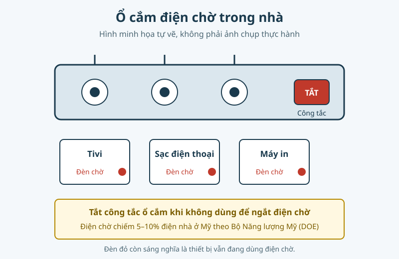

Điện chờ và đèn LED: hai khoản nhỏ cộng lại thành tiền
Tác giả: Ruler
Chuyên mục: Chọn mua thiết bị — Cập nhật: 23/11/2026
Nhiều gia đình chỉ để ý đến điều hòa và tủ lạnh khi nói về tiền điện, mà quên mất hai khoản nhỏ hơn nhưng chạy suốt ngày đêm: điện chờ của các thiết bị vẫn cắm điện dù đã tắt, và bóng đèn sợi đốt cũ vẫn còn trong nhiều phòng. Riêng từng khoản thì nhỏ, nhưng cả hai đều có một điểm chung: chúng tốn điện ngay cả khi bạn không dùng đến chúng. Bài này giải thích điện chờ là gì, vì sao đèn LED lại tiết kiệm hơn bóng sợi đốt, và làm sao để xử lý hai khoản này mà không phải thay hết đồ đạc trong nhà cùng một lúc.
Điện chờ là gì, và vì sao tắt rồi mà vẫn tốn điện?
Điện chờ, còn gọi là điện phantom hay điện ma, là lượng điện mà thiết bị vẫn tiêu thụ khi đã tắt bằng nút bấm hoặc remote, nhưng vẫn cắm điện. Tivi, đầu thu truyền hình, loa, máy chơi game, máy tính, máy in, cục sạc điện thoại cắm sẵn trong ổ — tất cả đều có thể vẫn "ăn" một ít điện khi bạn tưởng chúng đã tắt hẳn. Lý do là nhiều thiết bị hiện đại không ngắt điện hoàn toàn khi bạn bấm nút tắt. Chúng vẫn duy trì một mạch điện nhỏ để chờ tín hiệu từ remote, để hiển thị đồng hồ, để giữ kết nối mạng, hoặc để sạc pin dự phòng.
Bộ Năng lượng Mỹ (DOE) ước tính điện chờ chiếm khoảng 5–10% lượng điện dùng trong nhà ở Mỹ. EnergySage, khi tổng hợp từ số liệu của DOE và giá điện trung bình ở Mỹ, ước tính khoản này có thể tương đương tới khoảng 183 đô la Mỹ mỗi năm cho hộ gia đình trung bình ở Mỹ. Bạn cần nhớ rõ bối cảnh của hai con số này: chúng là ước tính cho hộ gia đình ở Mỹ, với mức dùng điện và giá điện ở Mỹ, không phải là cam kết cho hóa đơn điện ở Việt Nam. Bài này dẫn lại hai con số đó để bạn hiểu điện chờ không phải là chuyện nhỏ, chứ không phải để bạn nhân với giá điện Việt Nam rồi kết luận nhà mình sẽ tiết kiệm được đúng từng đó tiền. Mức điện chờ thực tế ở nhà bạn phụ thuộc vào số lượng thiết bị, tuổi của thiết bị, và thói quen cắm điện của gia đình.
Một điểm dễ gây hiểu lầm là không phải thiết bị nào cắm điện cũng tốn điện chờ như nhau. Cục sạc điện thoại đời mới, khi không cắm điện thoại vào, thường chỉ tốn rất ít điện. Đầu thu truyền hình cũ, máy chơi game để ở chế độ chờ nhanh, loa có đèn hiển thị sáng cả đêm, lại có thể tốn nhiều hơn. Vì vậy, thay vì rút hết mọi phích cắm trong nhà, bạn nên tìm ra ba nhóm tốn điện chờ nhiều nhất trong nhà mình trước: nhóm giải trí ở phòng khách, nhóm làm việc ở góc máy tính, và nhóm sạc pin ở phòng ngủ.
Cách tìm điện chờ trong nhà bạn trong một buổi tối
Bạn không cần mua đồng hồ đo điện ngay. Bạn có thể bắt đầu bằng cách đi một vòng quanh nhà vào buổi tối, khi mọi người đã tắt tivi và máy tính để đi ngủ, và nhìn xem còn thiết bị nào vẫn sáng đèn, vẫn hiển thị đồng hồ, vẫn phát ra tiếng quạt nhỏ, hoặc vẫn ấm tay khi chạm vào.
Hãy ghi lại vào bảng đơn giản dưới đây. Bạn chỉ cần ghi tên thiết bị, vị trí, và dấu hiệu cho thấy nó vẫn đang dùng điện chờ.
| Thiết bị | Vị trí | Dấu hiệu vẫn dùng điện chờ | Có cần cắm cả đêm không |
|---|---|---|---|
| Tivi + đầu thu | Phòng khách | Đèn đỏ, đồng hồ hiển thị | |
| Loa, máy chơi game | Phòng khách | Đèn sáng, quạt chạy nhẹ | |
| Máy tính, màn hình, máy in | Góc làm việc | Đèn nguồn, đèn mạng nhấp nháy | |
| Cục sạc điện thoại | Phòng ngủ | Cục sạc ấm tay dù không cắm điện thoại | |
| Lò vi sóng, bếp điện | Nhà bếp | Đồng hồ hiển thị giờ | |
| Router wifi | Góc nhà | Đèn mạng sáng cả đêm |
Sau khi ghi xong, bạn sẽ thấy một điều thú vị: router wifi là thiết bị mà nhiều gia đình không muốn tắt, vì cần mạng cho camera, cho điện thoại, cho người làm việc khuya. Điều đó là hợp lý. Bạn không cần tắt router để tiết kiệm vài đồng điện chờ, nếu việc tắt router làm mất kết nối của cả nhà. Hãy tập trung vào những thiết bị mà bạn có thể tắt hẳn mà không ảnh hưởng gì: tivi và đầu thu khi đã đi ngủ, máy chơi game khi không chơi, máy in khi không in, cục sạc khi điện thoại đã đầy pin.
Cách xử lý rẻ nhất là dùng ổ cắm có công tắc riêng cho từng nhóm thiết bị. Bạn cắm tivi, đầu thu và loa vào chung một ổ cắm có công tắc, đặt ở chỗ dễ với tay. Tối đi ngủ, bạn chỉ cần gạt một công tắc là cả nhóm ngắt điện hẳn, thay vì phải rút từng phích cắm. Tương tự, góc máy tính có thể dùng một ổ cắm có công tắc cho màn hình, loa và máy in, chỉ để riêng máy tính cắm trực tiếp nếu bạn cần cập nhật phần mềm vào ban đêm. Với cục sạc, thói quen đơn giản nhất là rút sạc ra khỏi ổ khi điện thoại đã đầy, thay vì để sạc cắm sẵn cả ngày.

Một lưu ý về an toàn: không dùng ổ cắm đã cũ, dây điện bị sờn, hoặc ổ cắm quá tải với nhiều thiết bị công suất lớn cùng lúc. Nếu ổ cắm nóng bất thường, có mùi khét, hoặc aptomat nhảy liên tục, hãy gọi thợ điện kiểm tra. Tiết kiệm điện chờ không đáng để đánh đổi với nguy cơ cháy nổ.
Đèn LED tiết kiệm hơn bóng sợi đốt ở chỗ nào?
Nếu điện chờ là khoản tiền mất đi âm thầm vào ban đêm, thì bóng đèn là khoản tiền bạn nhìn thấy mỗi tối khi bật đèn. Bóng sợi đốt cũ hoạt động bằng cách đốt nóng một sợi dây kim loại đến mức phát sáng. Phần lớn điện năng đưa vào bóng sợi đốt biến thành nhiệt, chỉ một phần nhỏ biến thành ánh sáng. Bóng LED hoạt động theo một nguyên lý khác, dùng ít điện hơn nhiều để tạo ra cùng một lượng ánh sáng.
Chương trình ENERGY STAR của Cơ quan Bảo vệ Môi trường Mỹ cho biết bóng đèn LED đạt chuẩn ENERGY STAR dùng ít hơn khoảng 75% điện năng so với bóng sợi đốt thông thường và có tuổi thọ dài hơn tới 25 lần. Hai con số này là kết quả thử nghiệm của chương trình ENERGY STAR ở Mỹ, so sánh bóng LED với bóng sợi đốt. Bạn nên hiểu chúng là mức so sánh giữa hai loại bóng, chứ không phải là cam kết rằng hóa đơn tiền điện chiếu sáng của nhà bạn sẽ giảm đúng 75%. Mức giảm thực tế còn phụ thuộc vào số bóng bạn thay, thời gian bật đèn mỗi ngày, và loại bóng cũ bạn đang dùng.
Ở Việt Nam, Bộ Công Thương cũng khuyến cáo người dân sử dụng đèn LED thay thế đèn sợi đốt, trong cùng nhóm khuyến cáo với việc dùng thiết bị có dán nhãn tiết kiệm năng lượng và tắt thiết bị khi không sử dụng. Khuyến cáo này xuất hiện trong tài liệu của Vụ Tiết kiệm năng lượng và Phát triển bền vững, Bộ Công Thương, được đăng lại trên trang của Văn phòng UBND tỉnh Ninh Bình. Nói cách khác, việc chuyển sang đèn LED không phải là một mẹo vặt trên mạng, mà là một trong những khuyến cáo chính thức về tiết kiệm điện cho hộ gia đình.
Một hiểu lầm hay gặp là đèn LED nào cũng giống nhau. Không phải vậy. Bóng LED rẻ tiền, không rõ nguồn gốc, có thể sáng yếu, nhấp nháy, hoặc hỏng sau vài tháng. Khi mua bóng LED, bạn nên chọn bóng có ghi rõ độ sáng tính bằng lumen, công suất tính bằng watt, và nhiệt độ màu. Độ sáng tính bằng lumen mới là thứ quyết định bóng sáng bao nhiêu, chứ không phải công suất tính bằng watt. Bạn nên đối chiếu lumen trên bao bì, thay vì chỉ nhìn watt, vì cùng một mức watt, mỗi hãng và mỗi mẫu bóng có thể cho độ sáng khác nhau.
Nhiệt độ màu cũng là thứ nhiều người bỏ qua. Nhiệt độ màu ghi trên hộp bóng cho biết ánh sáng nghiêng về vàng ấm hay trắng. Bóng cho ánh sáng vàng ấm phù hợp phòng ngủ và phòng khách, bóng cho ánh sáng trắng phù hợp nhà bếp và góc làm việc cần nhìn rõ. Nếu bạn thay bóng sợi đốt vàng ấm bằng bóng LED trắng toát trong phòng ngủ, bạn sẽ thấy khó chịu dù bóng LED tiết kiệm điện hơn. Hãy chọn nhiệt độ màu giống với cảm giác ánh sáng mà gia đình bạn đã quen, và đọc đúng số ghi trên hộp bóng mình mua.
Lộ trình thay đèn LED mà không tốn một lúc nhiều tiền
Nhiều gia đình ngại thay đèn LED vì nghĩ phải thay hết bóng trong nhà cùng một lúc, tốn nhiều tiền. Bạn không cần làm vậy. Cách hợp lý hơn là thay theo thứ tự: bóng nào bật lâu nhất trong ngày thì thay trước, bóng nào ít bật thì thay sau.
Thứ tự gợi ý là: phòng khách và nhà bếp trước, vì hai nơi này bật đèn nhiều giờ mỗi tối; tiếp theo là phòng ngủ chính và hành lang; cuối cùng mới đến nhà kho, ban công và những nơi ít bật đèn. Mỗi lần thay, bạn chỉ cần thay một hoặc hai bóng, ghi lại ngày thay và loại bóng đã thay vào một tờ giấy dán trong tủ điện hoặc ghi chú trong điện thoại. Sau vài tháng, bạn sẽ có đủ bóng LED ở những nơi dùng nhiều nhất, mà không phải bỏ ra một khoản tiền lớn trong một lần.
Bạn cũng nên tận dụng ánh sáng tự nhiên vào ban ngày. Mở rèm, lau sạch cửa sổ, sắp xếp bàn làm việc gần cửa sổ để ban ngày không cần bật đèn. Việc này không liên quan đến LED hay điện chờ, nhưng nó làm giảm thời gian bật đèn mỗi ngày, và thời gian bật đèn càng ngắn thì tiền điện chiếu sáng càng ít, dù bạn dùng loại bóng nào.
Một thói quen nhỏ khác là tắt đèn khi ra khỏi phòng. Nghe thì đơn giản, nhưng trong nhiều gia đình, đèn phòng tắm, đèn hành lang và đèn ban công thường bật cả đêm mà không ai để ý. Bạn có thể dán một tờ giấy nhắc nhỏ ở cửa ra vào trong tuần đầu tiên, hoặc dùng công tắc hẹn giờ cho đèn ban công và đèn sân. Sau một tuần, thói quen tắt đèn sẽ tự hình thành mà không cần giấy nhắc nữa.
Bảng rà soát ổ cắm và bóng đèn trong nhà bạn
| Khu vực | Thiết bị cắm điện chờ | Bóng đèn đang dùng | Việc nên làm tuần này |
|---|---|---|---|
| Phòng khách | Tivi, đầu thu, loa | Gộp vào ổ cắm có công tắc, thay bóng bật lâu nhất sang LED | |
| Góc làm việc | Máy tính, màn hình, máy in | Tắt màn hình và máy in khi nghỉ, thay bóng bàn làm việc sang LED | |
| Phòng ngủ | Cục sạc, đèn ngủ | Rút sạc khi đầy pin, chọn LED ánh sáng vàng ấm | |
| Nhà bếp | Lò vi sóng, bếp điện | Chỉ để đồng hồ lò vi sóng nếu cần, thay bóng bếp sang LED trắng | |
| Hành lang, ban công | Tắt đèn khi không dùng, cân nhắc công tắc hẹn giờ |
Kết luận
Điện chờ và đèn LED là hai khoản nhỏ, nhưng chúng có một điểm chung rất đáng để ý: cả hai đều tốn điện ngay cả khi bạn không dùng đến chúng, hoặc tốn nhiều điện hơn mức cần thiết để tạo ra cùng một lượng ánh sáng. Bạn không cần thay hết đồ đạc trong nhà để xử lý hai khoản này. Bạn chỉ cần một ổ cắm có công tắc cho nhóm tivi và máy tính, thói quen rút sạc khi đầy pin, và một lộ trình thay bóng LED theo thứ tự bóng nào bật lâu nhất thì thay trước. Sau một tháng, bạn hãy so sánh hóa đơn điện với tháng trước có điều kiện thời tiết và sinh hoạt tương tự. Nếu hóa đơn giảm xuống, dù chỉ một chút, bạn sẽ biết hai khoản nhỏ này có thật — và bạn đã xử lý được chúng bằng những việc nhỏ, làm được ngay tại nhà.
Nguồn tham khảo
- Bộ Năng lượng Mỹ (DOE) qua EnergySage, "Energy Vampires: Everything You Need to Know" — theo DOE, điện chờ chiếm 5–10% lượng điện dùng trong nhà ở Mỹ và có thể làm hộ gia đình trung bình ở Mỹ tốn tới khoảng 92–183 đô la Mỹ mỗi năm, tùy theo số lượng thiết bị và giá điện địa phương; DOE khuyến cáo dùng ổ cắm có công tắc, rút phích cắm khi không dùng, và chọn sản phẩm đạt chuẩn ENERGY STAR khi thay mới (truy cập 23/11/2026): https://www.energysage.com/energy-management/phantom-loads-overview/
- Chương trình ENERGY STAR, Cơ quan Bảo vệ Môi trường Mỹ, "U.S. Retailers Sell Millions of ENERGY STAR LED Bulbs as Challenge Ramps Up" — bóng đèn LED đạt chuẩn ENERGY STAR dùng ít hơn 75% điện năng so với bóng sợi đốt thông thường và có tuổi thọ dài hơn tới 25 lần; một bóng đèn có thể tiết kiệm hơn 135 đô la Mỹ tiền điện trong vòng đời của bóng (truy cập 23/11/2026): https://www.energystar.gov/about/newsroom/news-release-archive/us-retailers-sell-millions-energy-star-led-bulbs-challenge-ramps
- Vụ Tiết kiệm năng lượng và Phát triển bền vững, Bộ Công Thương, qua Văn phòng UBND tỉnh Ninh Bình, "Tránh 'đốt' tiền điện trong mùa Hè bằng những động tác nhỏ" — khuyến cáo hộ gia đình dùng đèn LED thay thế đèn sợi đốt, tắt thiết bị điện khi không sử dụng, chọn thiết bị có dán nhãn tiết kiệm năng lượng (truy cập 23/11/2026): https://vanphong.ninhbinh.gov.vn/tin-tuc-khac/tranh-dot-tien-dien-trong-mua-he-bang-nhung-dong-tac-nho-269789